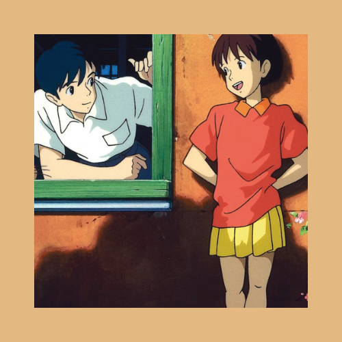
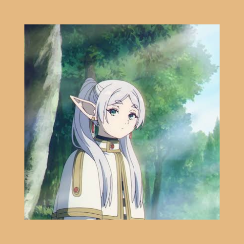
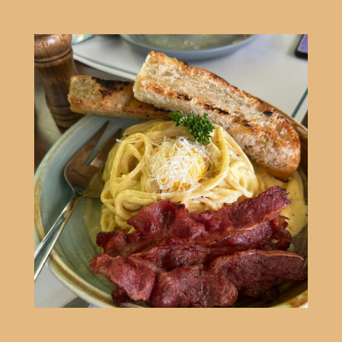
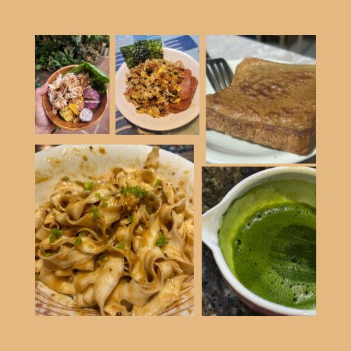
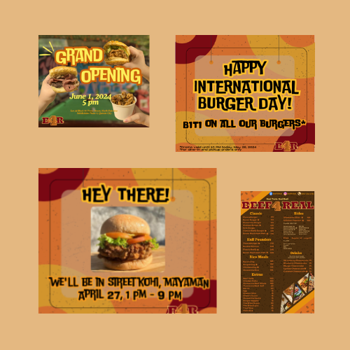
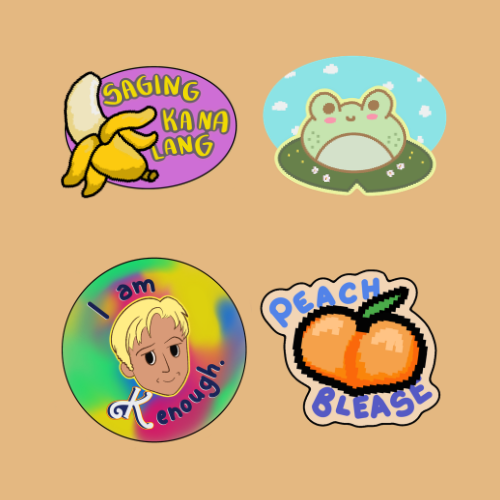

About Me
Hi, I'm Abigail! As a design student, I place immense value on creativity, authenticity, and growth. I look forward to experiencing life and learning whatever I can!
Things I Love ❀
- Series ♠︎ The Good Place, Modern Family, Adventure Time
-

Movies ♣︎ Meet the Robinsons, Whisper of the Heart, Shrek 2 -

Anime ♦︎ Hunter x Hunter, Noragami, Frieren: Beyond Journey’s End -

Food ♥︎ Pasta, Steak, and Yogurt!
Passion Projects ❤︎
-

FooDIY-ingAt-home recreation of various viral dishes, from chili peanut noodles to coffee roti!
-

Burger BrandingPromotional materials and menu designs for my kuya's burger joint, which unfortunately stopped operations last year.
-

Stickers!Simple stickers inspired by movies, series, and inside jokes with friends, made using Procreate!